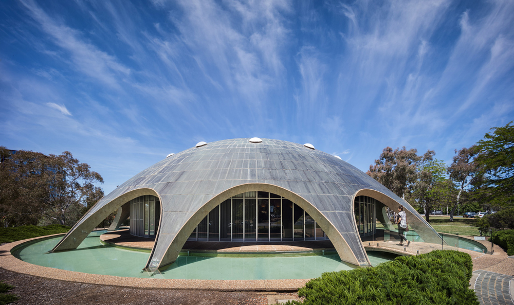
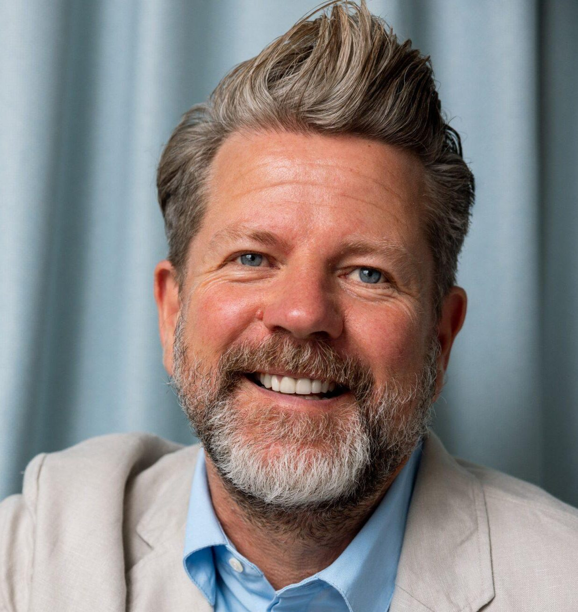

Edwina Jans
Archaeologist and cultural heritage specialist focused on education, communication, and public engagement for heritage places.

Canberra is a young city with a significant architectural legacy shaped through major periods of development during the twentieth century. The city’s built environment reflects a cohesive yet diverse modernist character that emerged particularly during the National Capital Development Commission period between 1958 and 1989.
Throughout these decades, important civic, residential, and community buildings were designed by architects now recognised as influential figures within the modernist movement. These structures contribute strongly to Canberra’s unique identity and designed landscape.
Many of these places have already been lost or face increasing risk due to redevelopment and changing urban priorities. Canberra Modern aims to raise awareness and encourage appreciation of these important places through public engagement, events, and education.
Archaeologist and cultural heritage specialist focused on education, communication, and public engagement for heritage places.
Heritage consultant and interpretation specialist with expertise in advocacy and engagement surrounding mid-century architecture.
Interior designer and heritage expert specialising in cultural landscapes, sustainability, and heritage management.
TV and radio presenter, comedian, author, and architecture advocate Tim Ross has been a long-time supporter of Canberra Modern and Australian modernist design. Through performances, public speaking, and advocacy work, he has contributed significantly to conversations surrounding the preservation of Australia’s architectural character.
Tim Ross received the National Trust Heritage Award for Advocacy in 2018 and the Australian Institute of Architects National President’s Prize in 2019 for his contribution to architecture advocacy and public engagement.

University House supported Canberra Modern through hosting events within its iconic mid-century environment.
The organisation advocates for design innovation and greater recognition of design professions within the ACT community.
International heritage organisation dedicated to the conservation and protection of cultural heritage sites.
Heritage consultancy specialising in archaeology, cultural landscapes, interpretation, and heritage engagement.
Canberra based architecture and design practice with a focus on sustainability and considered spatial design.
National professional body representing architects and promoting responsible and sustainable design across Australia.